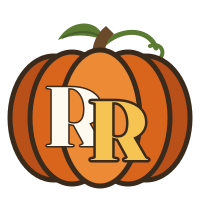
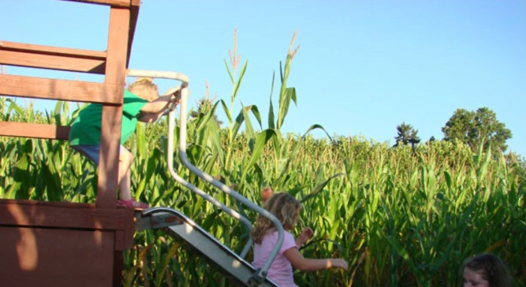

Pumpkin patch
The largest selection of pumpkins in the valley. Big ones for carving, little ones for the windowsill, and everything in between.
October weekends · 10am–6pm · Puyallup, WA
A third-generation family farm between Tacoma and Puyallup, just off River Road. Pick your pumpkin, get lost in the maze, launch a pumpkin from a slingshot and ride the hay wagon.

Things to do
The largest selection of pumpkins in the valley. Big ones for carving, little ones for the windowsill, and everything in between.
Five acres of twists, turns and dead ends. Can your crew find the way out?
Try your hand at one of three pumpkin slingshots. We even have one just for kids.
Climb aboard for a ride around the farm on weekends, weather permitting.
Browse decorative gourds, cornstalks, mini pumpkins and edible squash in our barn, which is over 80 years old.
Treats from Lumberjack Popcorn Company, starting the first weekend in October.
Prices
We keep it simple so the whole family can come out. Call (253) 227-5385 for current pumpkin prices.

Our story
Double R Farms is a third-generation family farm, formerly known as Richen Farms. After the passing of my father-in-law, George W. Richen, the land was leased out to local farmers, until the birth of our daughter. That inspired us to open Double R Farms as a way to help raise her, and we're hoping to make it a fourth-generation farm.
Over the years we've served our community with exceptional produce and customer service. Come see us. We know you won't be disappointed.
Ric & Geri Ruiz
“We had such a great time picking out pumpkins at Double R Farms yesterday! It was so fun to go on the hay ride too!”
Good to know
The pumpkin patch and corn maze are open during the month of October. Weekend hours are 10am to 6pm on Saturdays and Sundays. For weekday hours, please call (253) 227-5385.
Yes! Dogs are welcome as long as they're on a leash and you clean up after them.
Tractor-pulled hay rides run on weekends, weather permitting.
Yes. Concessions from Lumberjack Popcorn Company go on sale the first weekend in October.
Cash, checks, and major credit or debit cards: Visa, Mastercard, Discover and American Express.
Plan your visit
We're between Tacoma and Puyallup, just off River Road, next to Duris Cucumber Farm.
Double R FarmsOpen during October.
Questions? Contact Ric or Geri Ruiz at (253) 227-5385.